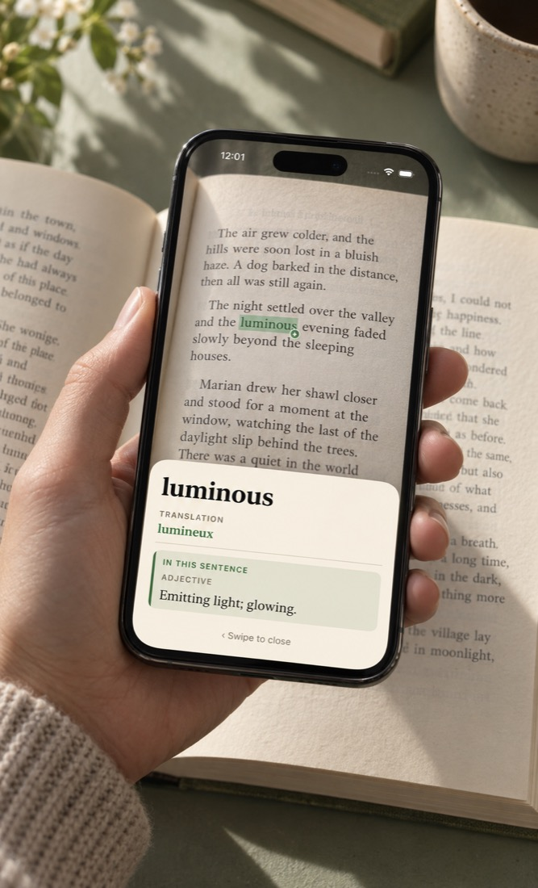

Visiere ein unbekanntes Wort an.
Halte den kleinen grünen Kreis über das Wort. Eine Markierung läuft darüber, sobald es erkannt wird.
Ein kleiner Begleiter für gedruckte Bücher
Richte dein iPhone auf ein unbekanntes Wort in deinem gedruckten Buch. Erfahre die Bedeutung und lies weiter.
Für iPhone · iOS 17 oder neuer · $1.99 USD

Ein Moment der Neugier
Kein Tippen, kein App-Wechsel. Ein kurzer Blick und zurück zum Buch.
Halte den kleinen grünen Kreis über das Wort. Eine Markierung läuft darüber, sobald es erkannt wird.
Die Definition erscheint. Lies sie auf einen Blick oder sieh dir bei Bedarf weitere Bedeutungen an.
Wische die Definition weg und kehre zu deinem Satz zurück. Die Kamera ist für das nächste Wort bereit.
Für deine Art zu lesen
Lies in der Sprache deines Buches. Lade nur die Wörterbücher, die du brauchst.
Wenn eine Bedeutung für den Satz bestätigt wurde, erscheint diese Definition zuerst.
So wird die Bedeutung gewählt ↓Installierte Wörterbücher und Übersetzungen funktionieren ohne Internet.
Alle verfügbaren Wörterbücher und Übersetzungspakete sind enthalten. Kein Abo, keine In-App-Käufe.
Ein wenig mehr Verständnis
Wenn eine Bedeutung für den Satz bestätigt wurde, erscheint ihre Definition zuerst. Weitere Bedeutungen bleiben zugänglich.
Die Auswahl nach Satzkontext erfordert ein unterstütztes iPhone mit verfügbarem Apple Intelligence unter iOS 26 oder neuer. Andernfalls erscheint die erste Wörterbuchbedeutung.
Pluralformen und Konjugationen können zum passenden Wörterbucheintrag führen.
Du liest auf Englisch? Ergänze neben der englischen Definition eine Wortübersetzung in deiner Sprache. Lade das Paket einmal und nutze es offline.
Wortentsprechungen variieren je nach Wort und Sprache. Es werden einzelne Wörter übersetzt, keine ganzen Seiten.

Wähle die Sprache deines Buches
Wähle aus 24 Buchsprachen. Englisch ist integriert; weitere Wörterbücher lädst du bei Bedarf. Wähle die Buchsprache und tippe auf Lesen beginnen.
Du liest ein englisches Buch? Wähle aus 24 separaten Wortübersetzungspaketen: den 23 herunterladbaren Buchsprachen oben sowie Griechisch.
27 Oberflächensprachen. Tippe auf dem Startbildschirm auf das Zahnrad und öffne Einstellungen → App-Sprache. Standardmäßig gilt die Sprache deines iPhones; wenn sie nicht unterstützt wird, wird Englisch angezeigt. Die Buchsprache bleibt unabhängig.
Griechisch bietet eine Oberfläche und Übersetzungen englischer Wörter, aber keine griechische Buchsprache. Kurdisch umfasst Kurmanji in lateinischer Schrift, nicht Sorani; Malaiisch umfasst Rumi in lateinischer Schrift. Chinesisch unterstützt vereinfachte und traditionelle Schrift. Die Abdeckung hängt von Wort, Form und Sprache ab.
Das Wesentliche
Installierte Wörterbücher und Übersetzungen funktionieren ohne Internet.
Kamerabilder und erkannte Wörter bleiben auf deinem iPhone. Ohne Konto, Werbung, Analysen oder Tracking.
Alle verfügbaren Wörterbücher und Übersetzungspakete sind enthalten. Kein Abo, keine In-App-Käufe.
Ja. Das englische Wörterbuch ist integriert. Lade zusätzliche Wörterbücher und Übersetzungen online herunter; danach funktionieren sie ohne Verbindung. Für den Paketkatalog ist Internet nötig.
Die 24 Buchsprachen sind oben aufgeführt. Englisch ist integriert; die anderen 23 Wörterbücher werden einzeln geladen. Wähle vor dem Lesen die Buchsprache. Chinesisch unterstützt beide Schriften; Kurdisch umfasst lateinisches Kurmanji und Malaiisch Rumi.
Wortübersetzungen stehen neben englischen Definitionen. Unter iOS 18 oder neuer kannst du nach dem Laden der benötigten Dateien auch übersetzte Definitionen für englische Bücher in 19 unterstützten Sprachen wählen.
Wenn eine Bedeutung für den Satz bestätigt wurde, erscheint ihre Definition zuerst. Weitere Bedeutungen bleiben zugänglich. Die Auswahl nach Satzkontext erfordert ein unterstütztes iPhone mit verfügbarem Apple Intelligence unter iOS 26 oder neuer. Andernfalls erscheint die erste Wörterbuchbedeutung.
Booktionary benötigt ein iPhone mit iOS 17 oder neuer. Gutes Licht hilft bei der Texterkennung.
Nein. Bilder, erkannte Wörter und Nachschlagen bleiben auf dem Gerät. Ohne Konto, Werbung oder Analysen. Für Downloads wird der Server kontaktiert, der deine IP-Adresse erhalten kann.
Gute Beleuchtung hilft. Halte das Telefon näher an die Seite, wenn der Text nicht erkannt wird, und wähle zuerst die Buchsprache. Prüfe die Offline-Nutzung, indem du die Ressourcen installierst und im Flugmodus ein Wort nachschlägst.
Brauchst du Hilfe? Schreibe an fredddv@hotmail.com und nenne dein iPhone-Modell, die iOS-Version, die Buchsprache und das Problem.
Für die Liebe zu gedruckten Büchern
Einmaliger Kauf. Kein Abo. · Für iPhone · iOS 17 oder neuer